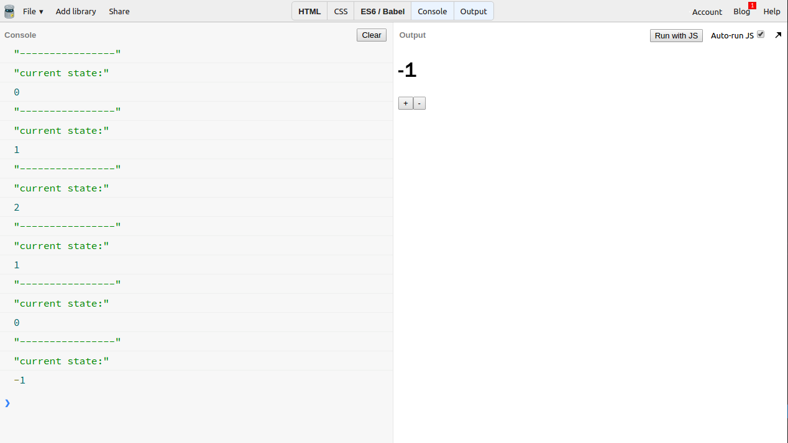
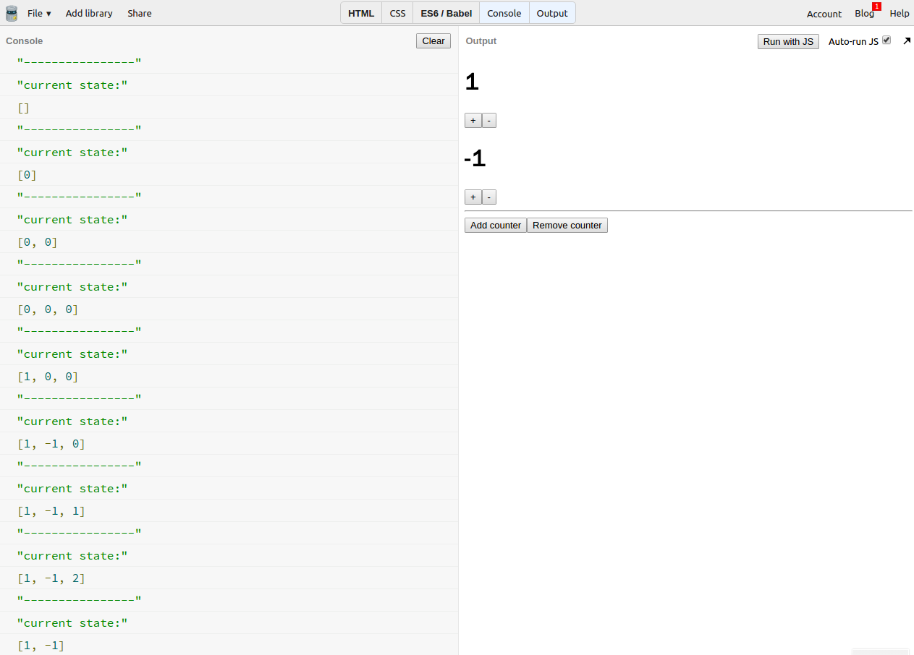
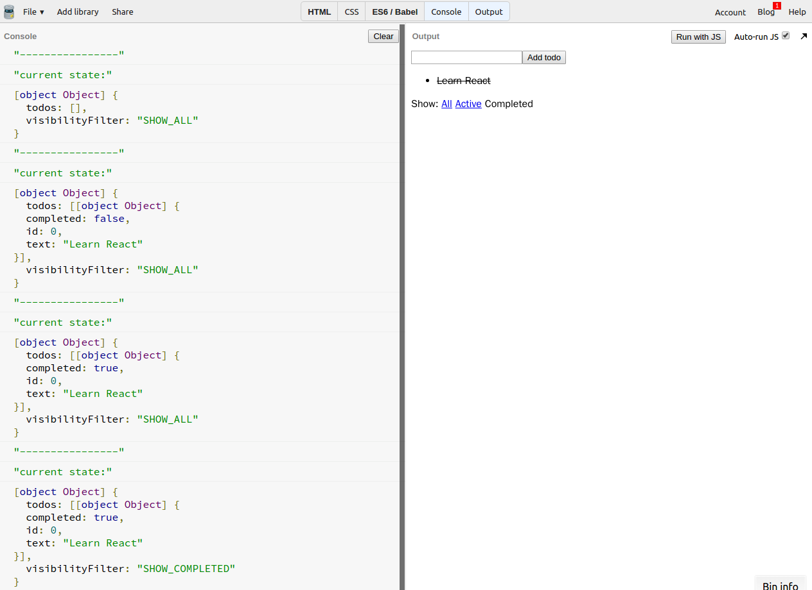

概念
- Redux 的第一原则：将应用的所有状态都包含到一个单一的 JavaScript 数据里（数值、数组、对象等）。
- 所有状态的变化都是显式的，我们可以把所有状态变化打印到控制台。
state
- 储存应用所有状态。
例子 1 - 计数器
 演示: https://jsbin.com/siragey/edit?console,output
什么是应用状态？
- 数据的变化
- UI 的变化
- 网络请求
这个简单的计数器应用的所有状态就只是一个 JavaScript 数值。
- 我们可以把当前的状态打印出来。
例子 2 - 多个独立的计数器
 演示: https://jsbin.com/zazatug/edit?console,output
- 在这个例子里，单一的数值不足以代表整个应用的状态。
- 我们可以使用数组，对于数组里每一个数值都代表了每个独立计数器的状态。
- 我们可以添加或移除计数器。
- 所有的状态改变都可以在控制台看到。
例子 3 - Todo 应用
 演示: https://jsbin.com/jeqeyup/edit?console,output
- 在更复杂一些的例子里，会有更多的状态需要去维护。
- Todo 应用的初始状态是一个 JavaScript 对象。
这个对象的"todos"属性是一个数组，代表着 todo 列表的状态
- 这个数组的每一项也是对象，代表着每一个 todo 的状态
"visibilityFilter" 属性则是一个字符串，它代表着过滤器的状态。
- 对这个应用的做的每个改变都会让应用状态发生改变
- 比如添加新的 todo
- 改变过滤器
- 点击 todo 标记完成/未完成
总结
/**
* state: Object | any
* 用于储存应用所有状态
* 通常是，但不一定是一个对象
* 每一个应用只能有一个
*/
// 示例
const counterState = 2;
const multipleCounterState = [1, 0, -1];
const todoAppState = {
todos: {
completed: true,
id: 0,
text: "Learn Redux"
}, {
completed: false,
id: 1,
text: "Learn React"
}],
visibilityFilter: "SHOW_COMPLETED"
}无论应用状态有多复杂，都可以把它们包含在单一的数据结构里（它通常是一个对象）。
我们把这样一个数据结构叫做状态 (state) 或者状态树 (state tree) 。
思考： （答案将在下一节公布）
- 为什么上面示例代码声明 state 用到的是 const 而不是 let?